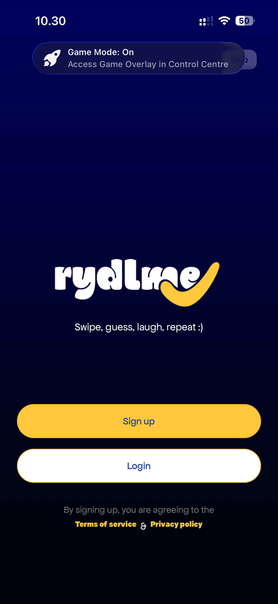
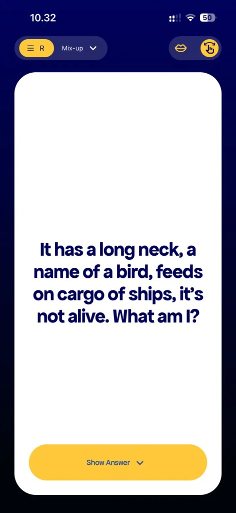
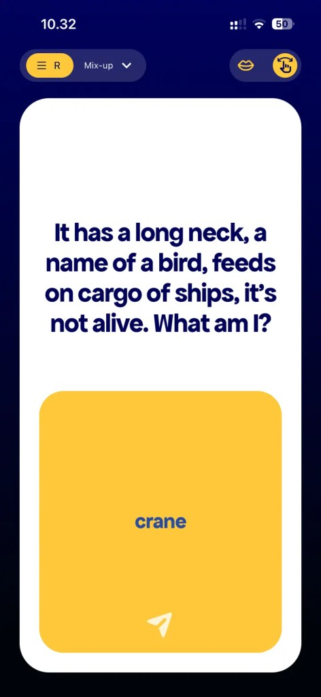
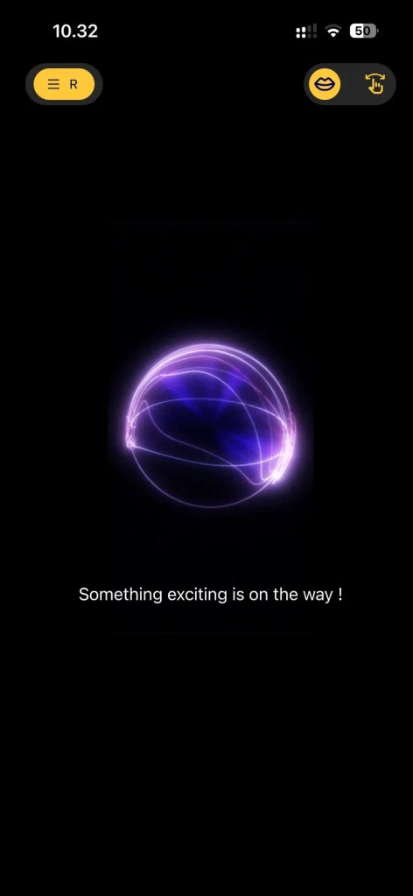

Rydlme
AI Implementation Specialist




The app
Rydlme is a social entertainment app built around jokes, riddles and playful interaction. Users can browse content, guess answers and reveal solutions through a simple swipe-based experience designed for quick moments of fun.
Why I joined
I joined Rydlme to explore where AI could add meaningful value to the app. The goal was not simply to introduce AI as a feature, but to understand how it could make the experience more engaging and interactive for users.
Changing the direction
Our initial direction focused on using AI to generate jokes and riddles. Through experimentation, we found that the generated content often lacked context, semantic maturity and the qualities that make humour feel natural. Based on these findings, we decided not to continue with that direction.
We shifted our focus towards an interactive voice AI experience. This creates an opportunity for users to engage with the app through conversation rather than only consuming generated content.
Work in progress
The voice experience is currently in the prototyping stage. The fourth image on the left is a visual indication of the voice experience currently being prototyped. I am keeping the working interface and early prototype private while we continue testing and refining the experience.
If you are interested in the thinking behind the prototype or would like to see an early version, let us connect.
What this experience is developing: AI product discovery · Voice AI · Prototyping · Business analysis · User experience · Responsible AI · Cross-functional collaboration